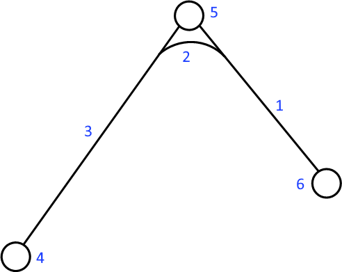
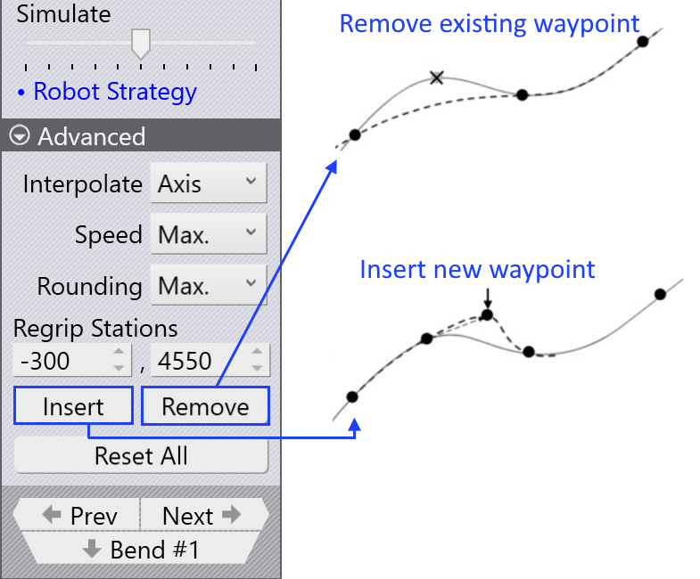

Punti posizione
Panoramica
Ogni movimento del BendMaster consiste in waypoints che vengono passati uno dopo l’altro. Tutti i punti posizione di un movimento sono determinati da TecZone, ma la maggior parte di essi può essere regolata. I punti che sono direttamente correlati al tracciamento durante il processo di piegatura non possono essere modificati. Varie impostazioni utilizzate per controllare i punti posizione sono elencate di seguito:
-
Modificare la posizione di un punto posizione
-
Inserire un nuovo punto posizione o rimuovere un punto posizione esistente
-
Regolare le proprietà di movimento come velocità e interpolazione
-
Aggiungere un nuovo punto posizione nella posizione desiderata
Per accedere al pannello Waypoints:
-
Fare clic direttamente sul binario del robot
-
Fare clic sul collegamento Waypoints dal pannello Pickup, pannello Bend, pannello Regrip o pannello Deposit.
-
Fare clic sul collegamento waypoints in uno qualsiasi dei pannelli RG-Stations


Pannello Waypoints

Un tipico pannello waypoints è mostrato accanto:
-
Il cursore Phase mostra il movimento passo dopo passo di un punto posizione. Ogni fase riflette una particolare operazione del robot come pickup, bend, regrip e deposit.
-
Utilizzare l’opzione Display per visualizzare:
-
grip point
-
wrist point
-
robot axes.
-
-
La posizione e l’angolo del polso o del gripper vengono visualizzati e possono essere modificati. Se gli assi del robot sono selezionati, i valori degli assi del robot vengono visualizzati e possono essere modificati.
-
La traccia gialla mostra il percorso dal passo precedente a questo e da questo passo al successivo (vedere l’immagine sotto). I 3 piccoli triangoli indicano le coordinate X e Y locali del robot (polso o gripper).
-
Il cursore Simulate viene utilizzato per spostare la simulazione dalla fase precedente alla fase successiva. Se questo è al centro, quella è la fase effettiva che stiamo modificando.
-
L’impostazione Interpolate viene utilizzata per passare tra interpolazioni lineari e orientate agli assi.
-
Le impostazioni Speed e Rounding vengono utilizzate per modificare l’impostazione di velocità e precisione per questo passo.
-
Il campo Regrip stations viene utilizzato per modificare la posizione delle stazioni di ripresa lungo il suo asse.
-
L’opzione Insert viene utilizzata per creare un nuovo punto posizione inserendo nuovi valori. I punti posizione appena aggiunti possono essere rimossi con l’opzione Remove.
-
Utilizzare i pulsanti Prev e Next per andare al passo successivo o precedente (oppure è anche possibile utilizzare i tasti freccia Sinistra e Destra). Facendo clic sul pulsante Next verrà mostrato ogni passo in una fase. Alla fine della fase, viene visualizzato il pannello del punto posizione corrispondente successivo.
Proprietà dei punti posizione
A seconda dello stato del processo, a ciascun punto posizione viene assegnato un set di attributi relativo al tipo di interpolazione, alla velocità e alla precisione del movimento. Se necessario, questi attributi possono essere modificati.
Queste impostazioni sono controllate nella sezione Avanzate del pannello del punto posizione.
| Tipo Interpolate | Descrizione |
|---|---|
Linear |
Movimento lineare del TCP lungo un percorso |
Axis |
Il movimento dalla posizione iniziale alla posizione finale
è il più veloce possibile, indipendentemente dal percorso. |
| Tipo Speed | Descrizione |
|---|---|
Max. |
Velocità massima |
Fast |
75% della velocità massima |
Medium |
50% della velocità massima |
Reduced |
30% della velocità massima |
Slow |
20% della velocità massima |
| Tipo Rounding | Descrizione |
|---|---|
Max. |
L’arrotondamento inizia al 50% della lunghezza del percorso più breve |
Large |
L’arrotondamento inizia al 35% della lunghezza del percorso più breve |
Medium |
L’arrotondamento inizia al 20% della lunghezza del percorso più breve |
Reduced |
L’arrotondamento inizia al 10% della lunghezza del percorso più breve |
Fine |
L’arrotondamento inizia al 5% della lunghezza del percorso più breve |
Exact |
Il punto di calibrazione viene avvicinato esattamente senza sovrapposizione |

-
Lunghezza del percorso tra il punto posizione e il punto finale
-
Lunghezza eseguita
-
Lunghezza del percorso tra il punto iniziale e il punto posizione
-
Waypoint 3 (punto finale)
-
Waypoint 2 (punto di arrotondamento)
-
Waypoint 1 (punto iniziale)
Visualizza waypoints
Quando una parte di piegatura viene attrezzata, tutti i punti posizione vengono calcolati automaticamente per ciascuna fase di movimento. Questi punti possono essere simulati fase per fase con una corrispondente descrizione.

Le immagini seguenti mostrano le fasi dei punti posizione della prima operazione di piegatura (vista laterale):

Modifica waypoints
La posizione di un punto posizione può essere modificata se necessario, ad esempio, per evitare di andare sopra l’asse.
Tra gli altri aspetti relativi all’evitamento delle collisioni, i punti posizione indesiderati possono essere eliminati o è possibile aggiungere nuovi punti posizione.
-
Quando viene modificata la posizione di un punto posizione esistente, TecZone mostra un messaggio di avviso. Fare clic su OK per procedere con la modifica del punto posizione.

-
Facendo clic sul pulsante Insert verrà aggiunto un nuovo punto posizione.


-
I punti posizione appena aggiunti sono indicati da +1,+2,ecc., nel nome della fase come mostrato sotto:

Simula waypoints
Per impostazione predefinita, il cursore simulate è nella posizione centrale. Il movimento del robot da un punto posizione all’altro viene simulato senza interruzioni utilizzando questo cursore.